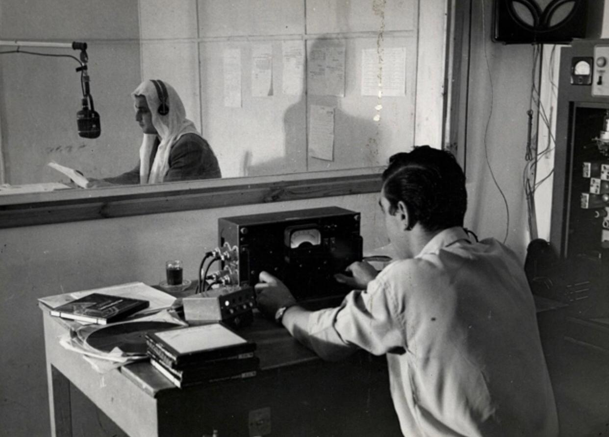
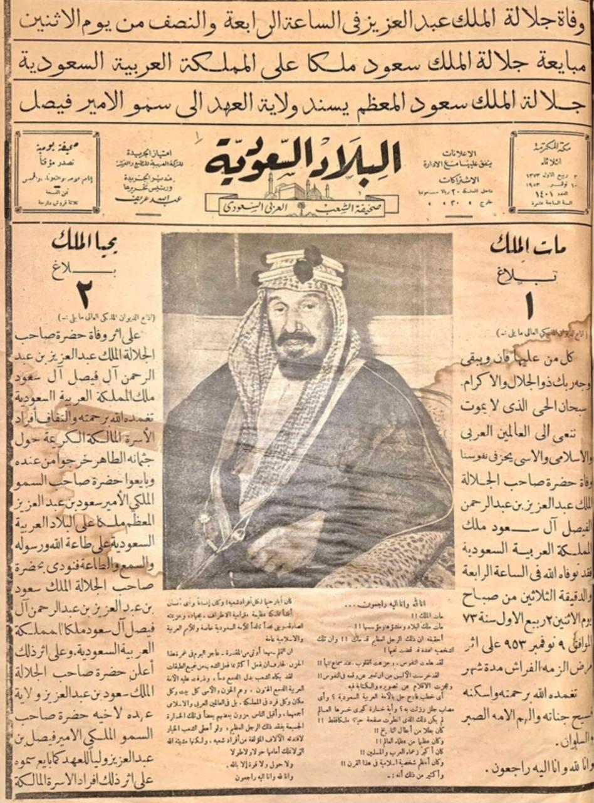

ذاكرة الإعلام
الإذاعة السعودية

الإذاعة والتلفزيون "SBA"، وتتبع وزارة الإعلام السعودية، يشمل البث الرسمي ست محطات، بثت أول محطة منها خلال عام 1368هـ/1949م، في عهد الملك المؤسس عبدالعزيز بن عبدالرحمن آل سعود.
الإذاعات السعودية الرسمية
تعد إذاعات الرياض، وجدة، ونداء الإسلام، والقرآن الكريم، وراديو السعودية، ومحطة الإذاعات السعودية الدولية، الإذاعات الرسمية في السعودية.
وتعمل إذاعة الرياض بوصفها الصوت العام والرسمي للسعودية، وتصنف إذاعة جدة محطة عامة منوعة، أما إذاعتا نداء الإسلام والقرآن الكريم فهما الإذاعتان الدينيتان للسعودية، ويتوجه راديو السعودية ببرامجه العامة والمنوعة للجاليات الناطقة باللغة الإنجليزية، وتبث محطة الإذاعات السعودية الدولية برامجها لخارج السعودية بثماني لغات، هي: الفرنسية، والسواحلية، والفارسية، والأردية، والبنغالية، والإندونيسية، والتركية، والتركستانية.

تاريخ تأسيس الإذاعة السعودية
تقدم الملك سعود بن عبدالعزيز (ولي العهد آنذاك) للملك المؤسس عبدالعزيز بن عبدالرحمن آل سعود بفكرة تأسيس إذاعة للسعودية، وفي عام 1368هـ/1949م، صدر المرسوم الملكي الموضح لإطارها العام، والتزاماتها الموضوعية والواقعية والأمانة، وكُلف بالإشراف على تنفيذها الأمير (الملك لاحقًا) فيصل بن عبدالعزيز آل سعود، نائب الملك في الحجاز في ذلك الوقت.
بدأ إرسال إذاعة جدة يوم 9 ذي الحجة 1368هـ/1 أكتوبر 1949م، أثناء موسم الحج، بكلمة ألقاها الأمير فيصل بن عبدالعزيز آل سعود، تضمنت تهنئة الحجيج بمناسك الحج والترحيب بقدومهم إلى الأراضي المقدسة، ومثلت إذاعة جدة نواة الإذاعات في السعودية.
وفي عام 1384هـ/1965م، بدأ البث الإذاعي من الرياض العاصمة، وفي العام نفسه استقل البرنامج العام من الرياض ليصبح الإذاعة الرسمية الأولى، وقُدم البرنامج الثاني من إذاعة جدة.
أقدم الصحف السعودية
تعود بدايات الصحافة السعودية إلى مرحلة توحيد المملكة في عهد الملك المؤسس عبدالعزيز بن عبدالرحمن آل سعود. وأقدم الصحف السعودية تشمل:
- جريدة أم القرى: الصحيفة الرسمية للمملكة، صدر أول عدد لها في مكة المكرمة وما زالت تصدر حتى الآن.
- صحيفة البلاد: بدأت باسم صوت الحجاز، توقفت لفترة ثم عادت باسمها الحالي، ويقع مقرها في جدة.
- صحيفة المدينة: تصدر عن مؤسسة المدينة للصحافة والنشر في جدة وما تزال مستمرة.
- صحيفة عكاظ: صدرت من الطائف وتصدر حاليا من جدة.
- صحيفة الجزيرة: تصدر عن مؤسسة الجزيرة للصحافة والطباعة والنشر في الرياض وما تزال مستمرة.
الصحافة السعودية.. النشأة والمراحل
تعد الصحافة إحدى وسائل الإعلام العريقة والمهمة التي لعبت دورا كبيرا في نقل الأحداث بكل تفاصيلها، وساهمت في توعية وتثقيف الجمهور، والتي تقوم بنشر الأخبار والأحداث والمعلومات والقضايا إلى جمهور القراء وتحليلها وتفسيرها، مستخدمة في ذلك الأشكال التحريرية المختلفة، بهدف زيادة وعي القراء وتثقيفهم وتعليمهم وتسليتهم، وربطهم بالمجتمعات الأخرى، حيث إنها الوسيلة الإعلامية الأولى التي سبقت جميع وسائل الإعلام الأخرى.
تعود نشأة الصحافة السعودية إلى بدايات توحيد المملكة العربية السعودية على يد الملك عبد العزيز آل سعود، حيث كانت هناك صحف في العهد العثماني والعهد الهاشمي، خاصة في منطقة الحجاز، وبعد أن توطد الحكم للملك عبد العزيز صدرت صحيفة أم القرى عام 1924م التي تعد البداية الحقيقية للصحافة السعودية، ولقد رأت الحكومة ضرورة تطوير الصحافة السعودية، وجاء الاهتمام بتطوير الأداء الصحفي من قبل الحكومة لإصلاح المنظومة الصحفية وتطوير أدائها لتقوم بدورها الاجتماعي والإعلامي والثقافي، وهو ما يشير إلى الاهتمام المبكر من السلطة السياسية بقيمة الصحافة وأهمية دورها، والاهتمام الحكومي بالصحافة وتطويرها، وقد مرت الصحافة السعودية بثلاث مراحل هي:
صحافة الأفراد
وقد امتدت هذه المرحلة من عام 1928م إلى عام 1959م، حيث كان حق إصدار صحيفة أو مجلة مشاعا لكل مواطن، وقد صدرت حينذاك تسع عشرة صحيفة ومجلة متنوعة الصدور والتخصصات والاتجاهات.
مرحلة دمج بعض الصحف
وامتدت هذه المرحلة من عام 1959م إلى عام 1964م، حيث رأت الحكومة أن أعداد الصحف قد تجاوز الحد الذي لا تستوعبه الحياة الثقافية والاجتماعية والاقتصادية والسياسية السعودية حينذاك، وبعد دراسة هذه القضية تم تنفيذ عملية الدمج، فاندمجت بعض الصحف مع البعض الآخر تحت مسميات جديدة، وتوقفت صحف أخرى لم تستطع أن تجد لها آلية للدمج، وأصبح هناك عشر مطبوعات ما بين صحيفة ومجلة.
مرحلة المؤسسات الصحفية
حيث شكلت الحكومة في عام 1964م لجنة عليا من خلال مجلس الوزراء لدراسة حالة الصحف بناء على مرئيات وزارة الإعلام، وصدر نظام المؤسسات الصحفية الأهلية في نفس العام، وقد اختفت صحف ومجلات عديدة لم تستطع أن تصدر من خلال مؤسسة صحفية أهلية، وفي ظل التطورات تم تأسيس عشر مؤسسات صحفية أهلية، سبع مؤسسات تصدر صحفا يومية، بالإضافة إلى المؤسستين الجديدتين اللتين أنشئتا لاحقا وأصدرتا صحيفة الوطن، وصحيفة الشرق، مع تغيير مسمى صحيفة الندوة إلى صحيفة مكة، لتصبح تسع مؤسسات صحفية أهلية، منهما مؤسستان تصدران مجلات مستقلة.
لقد ساهمت الصحافة السعودية وعبر تاريخها الطويل في تنمية المجتمع السعودي والمساهمة في التنشئة السياسية والاجتماعية والثقافية، وكانت رافدا مهما من الروافد المعرفية ومنبرا للرأي المتزن الذي ساهم في استقرار المجتمع وتوعيته وترابطه.
- د. أحمد قران الزهراني

جميل سمان
بَشاشة لا تغيب
عرفت عنه ابتسامته العريضة كسِمة لا تفارق ملامحه، يقرأ بها الأخبار على اختلافها دون أن تبهت وقيل عنه: "كان يقرأ الأخبار بابتسامة، ويتقبل النقد بابتسامة"، حيث كانت امتدادًا لشخصيته المرحة، وصفة أصيلة فيه.
"مشوار" و"آخر الأسبوع"
تألق جميل خلال فترة عمله في الرياض التي امتدت لأكثر من 20 عامًا، قدّم خلالها نشرات الأخبار وبرامج إذاعية وتلفزيونية بارزة منها "مشوار"، و"آخر الأسبوع"، وحقق شهرة واسعة ورصيدًا كبيّرا من محبة الناس ومعرفتهم.
من موجات الإذاعة
كانت انطلاقة الصوت الذي سيظل صداه طويلًا في ذاكرة الجمهور السعودي، حيث صدح جميل سمّان في أولى نشراته عبر الإذاعة، ولم يمض كثير حتى دعاه التلفزيون بشاشته البيضاء والسوداء ليسجل حضوره المميز.
ماجد الشبل
بلاغة وبيان
لم يكن صوته مجرد وسيلة لنقل الخبر، بقدر ما كان فنَّا يُقال وبلاغة تُروى. حيث شكّل الشبل مدرسته في الإلقاء، ومقياسه الخاص للفصاحة والجزالة الإعلامية.
بين دمشق ونجد
نشأ ودرس الأدب في دمشق، وبدأ مسيرته الإعلامية مذيعًا في التلفزيون السوري، ثم عاد في الستينات الميلادية إلى المملكة؛ ليصبح من الروّاد المؤسسين للإعلام السعودي.
مقام الحروف
تنقل بين النشرات الإخبارية والبرامج التي أثرت الوعي الثقافي، وقدم بصوته الابتهالات والأدعية الدينية. وكانت الشاشة نافذته إلى أعماق أكبر، حيث كان شاعرًا وخطيبًا ومثقفًا.
في كل بيت سعودي "ماجد"
غاب عن الشاشة وترك إرتًا إعلاميًّا وأدبيًّا غنيًا، وبقي صوته حيًّا في ذاكرة السعوديين، حتى بعد أن ترجل بصمت، مختتمًا مسيرته بقوله: "يكفيني فخرًا أني بصمت في زاوية كل بيت سعودي اسم ماجد الشبل".
تركي السديري
على مدى أربعة عقود، قاد تركي السديري جريدة الرياض بوعي القائد وحسّ الكاتب، حتى أصبحت إحدى أبرز الصحف الخليجية والعربية، وأصبح عنوانًا للريادة في الإعلام.
صوتٌ تجاوز الحدود
لم تقف إسهاماته عند حدود الوطن؛ فقد كان أول رئيس لاتحاد الصحافة الخليجية، ورئيسًا لهيئة الصحفيين السعوديين، ممثلًا للمملكة بقلم نافذ ورؤية مؤسسية.
مُمَكِّن الصحافة النسائية
في وقت مبكر، آمن بقدرات الكوادر النسائية، فافتتح أول قسم تحرير نسائي عام 1980، وجمع آنذاك أكبر فريق نسائي في الصحافة السعودية، صانعًا من الحبر صوتًا للجميع.
ملك الصحافة
كما لقبه الملك في لفتة ملكية من الملك عبد الله بن عبد العزيز، نال لقبه الأبقى: ملك الصحافة، تكريمًا لمسيرة امتد أثرها، وتخرّج من مدرستها جيلٌ من الإعلاميين السعوديين.
سليمان العيسى
ليس مجرد مذيع، بل هو الصوت الذي ارتبط بإعلان الأوامر الملكية، حضوره الموثوق جعل من نبرته علامة فارقة في تغطية الشأن العام، ومرجعًا للأداء الإعلامي المتزن.
مستشار إعلامي ومستشار في الديوان الملكي، برز في قراءة قرارات مجلس الوزراء بصوتٍ يجمع بين الدقة والوضوح، بما يعكس لغة المؤسسات الرسمية التي يثق بها الجمهور.
لم يقتصر حضوره على الشاشة الرسمية، بل كان جزءًا من المشهد الرياضي، معلقًا على مباريات المنتخب والمباريات الرسمية برعاية الملوك؛ جامعًا بين رصانة الأداء وحيوية اللحظة.
صوتٌ راسخ
ترجل صوته عن المنصات، لكن أثره باقٍ، محفور في ذاكرة الإعلام، مسموع في وجدان كل من عايشه.
محمد الصبيحي
رؤية وإبداع
عرف محمد الصبيحي بإسهاماته البارزة في تطوير العمل التلفزيوني والإعلامي في المملكة، وترك بصمة واضحة في أساليب الإنتاج والبرامج التي قدمها، حيث امتازت أعماله بالاحترافية والابتكار.
"برامج ومشاريع إعلامية"
قاد محمد مشاريع تلفزيونية مهمة وقدم برامج أسهمت في نقل التجربة الإعلامية السعودية إلى مستوى متطور، مكتسبًا احترام زملائه ومحبة المشاهدين.
من خلف الكاميرا
بدأ مسيرته في مجال الإخراج والإنتاج التلفزيوني، حيث كانت بصماته واضحة في كل برنامج تولاه، وامتد صوته الإعلامي وإبداعه ليشمل التلفزيون والإذاعة، محدثًا فارقًا في المشهد الإعلامي السعودي.
محمد عبدالرحمن الجحلان
صحافة مؤثرة
عرف محمد عبدالرحمن الجحلان بدوره البارز في تطوير الصحافة السعودية والإعلام المكتوب، وكان له تأثير ملموس في أسلوب التقارير والتحقيقات، مع اهتمامه بتدريب الأجيال الجديدة من الإعلاميين.
"أعمال ومساهمات"
شارك في إعداد وتحرير تقارير ومقالات تناولت قضايا وطنية واجتماعية، ما أكسبه احترام القراء وزملائه في الصحافة، وأسهم في رفع مستوى المهنة.
من المكتبة إلى الميدان
امتدت خبرته بين العمل الميداني والتحرير الصحفي، محققًا توازنًا بين المهنية والدقة في نقل الأحداث، ليترك أثرًا مستدامًا في ذاكرة الإعلام السعودي.